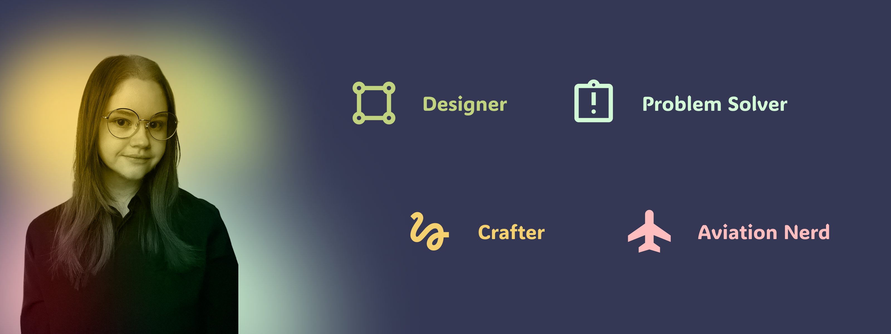

About me
Hi! I'm Lucy. A UX designer passionate about understanding the needs of diverse stakeholders to create thoughtful, seamless solutions.
Throughout my time studying interaction design, I've had the opportunity to design for a range of interfaces, from smart watches to desktop. I recently worked independently on a remote learning solution for chronically ill and disabled students.
Outside of design, you'll find me crocheting or cross-stitching as a creative outlet, catching up on the latest aviation news, or travelling whenever I can. Check out some of my work on my portfolio!